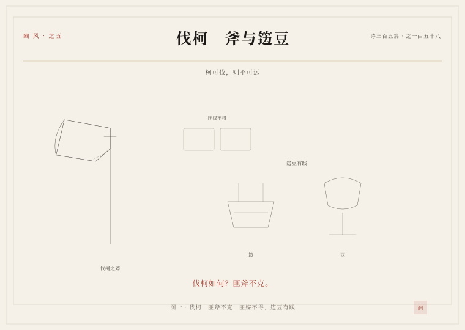
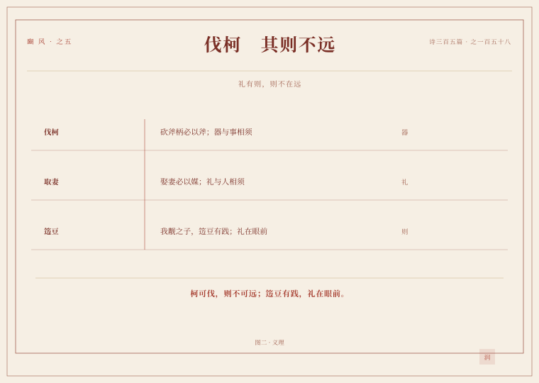

第一百五十八篇 伐柯
豳风 · 之五 SJ158
朗读 · 普通话
依经文原文朗读，章次不读出；配古琴底乐，不改速、不加拖腔。全库同一音色（豆包 TTS），非播音员录制。
一 解题
诗三判：
- 谁在说：周大夫。美周公之德，而刺朝廷不知；以伐柯、取妻二事起兴，言礼有则、则不远。
- 说什么事：二章皆以「如何」发问：伐柯如何？取妻如何？答以「匪斧不克」「匪媒不得」；再以「其则不远」收，末以「笾豆有践」见礼。
- 为何编在此：豳风第五篇。前篇写东征之成，此篇写朝廷之不知；武功已定，礼未行。
《毛序》：「《伐柯》，美周公也。周大夫刺朝廷之不知也。」
朱子《诗集传》：「比也。柯，斧柄也。则，法也。我觏之子，笾豆有践，言见周公之礼也。」
本库的看法：《伐柯》是一首把「礼」写成「斧柄」的诗。
毛序说「美周公、刺朝廷」，朱子说「比」，二说一美一刺，其实同指：伐柯必有斧，取妻必有媒；礼有则，则不在远。
须辨：柯是斧柄，不是树枝；则
是法，不是距离；觏是见，不是婚媾；笾豆是礼器，不是豆子；有践是陈列成行，不是践踏。诗不直斥朝廷，只言「则不远」。
断语：柯可伐，则不可远；笾豆有践，礼在眼前。
先辨五事：「柯」是斧柄；「则」是法；「觏」是见；「笾豆」是礼器；「践」是陈列。
二 经文
第一章
伐柯如何？匪斧不克。
取妻如何？匪媒不得。
第二章
伐柯伐柯，其则不远。
我觏之子，笾豆有践。
三 韵读
- 一章：何、克、何、得，歌、职交错。声问而答。
- 二章：柯、远、子、践，歌、元、之交错。声转而近。
读法：一章两问两答，声短；二章「其则不远」一转，声近；问得远，答得近。
四 字义与名物
- 柯：斧柄。伐柯：砍斧柄。匪：非。克：能。取妻：娶妻。媒：媒人。得：成。
- 则：法。不远：不远。觏：见。之子：此人，指周公。笾豆：礼器。践：陈列成行。
五 今译
一章：砍斧柄怎么做？没有斧不能成。娶妻怎么做？没有媒不能成。
二章：砍斧柄啊砍斧柄，它的法则不远。我见到此人，笾豆陈列成行。
六 章旨
- 一章：伐柯需斧，是「器」；取妻需媒，是「礼」；二事并列，礼器相须。
- 二章：其则不远，是「法在近」；笾豆有践，是「礼在见」；不遠在天，而在眼前。
七 诗教
- 礼有则：伐柯有斧，取妻有媒；无器不能成事，无礼不能成人。
- 则不远：法则不在高远，在日用；眼前笾豆，即是礼。
- 美而不谀：美周公而刺朝廷不知；美其礼，正刺其不见礼。
八 分寸与边界
- 不把「柯」读成树枝：柯是斧柄；读成树枝，则「匪斧不克」无着。
- 不把「则」读成距离：则是法；读成远近，则「不远」两字失。
- 不把「笾豆」读成豆子：笾豆是礼器；读成食物，则礼义失。
- 不把「有践」读成践踏：有践是陈列；读成践踏，则礼容失。
九 存疑
- 诗旨：毛序「美周公、刺朝廷」，朱子「比」。本库从毛朱，以礼则为骨。
- 「柯」：毛传「斧柄」。从毛传。
- 「我觏之子」：一说指周公，一说指娶妻者。从周公。
- 「有践」：毛传「行列貌」。从陈列。
十 跨典
- 《礼记·礼器》「礼也者，物之致也」；此篇笾豆有践，正是礼之致。
- 《论语》「礼云礼云，玉帛云乎哉」；此篇言礼在则，不在玉帛。
- 《孟子》「不以规矩，不能成方圆」；此篇「其则不远」，同一法则之喻。
十一 双卡与图
六对：
| 柯（斧柄） |
柯（树枝） |
| 则（法） |
则（距离） |
| 觏（见） |
觏（婚媾） |
| 笾豆（礼器） |
笾豆（豆子） |
| 有践（陈列） |
有践（践踏） |
| 其则不远（法在眼前） |
其则不远（距离近） |

图一 · 伐柯 匪斧不克，匪媒不得

图二 · 伐柯 其则不远，笾豆有践